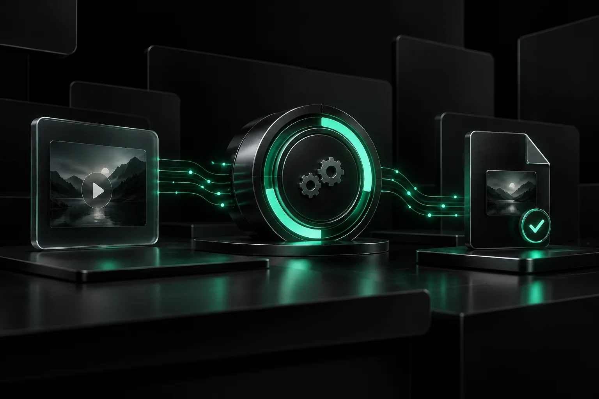
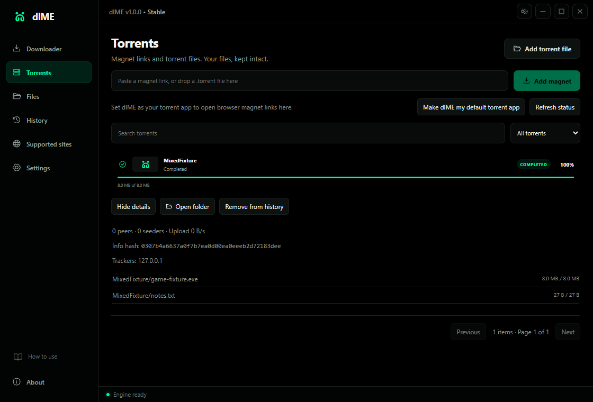
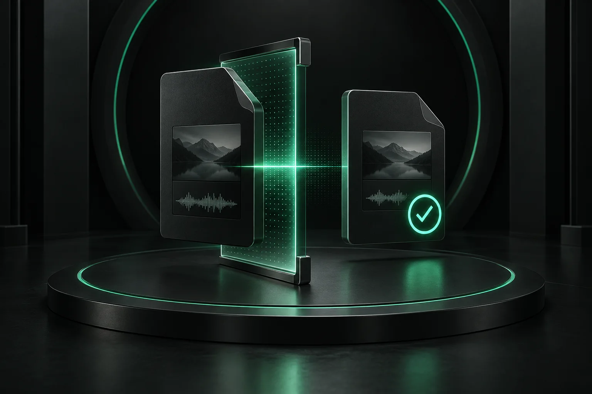
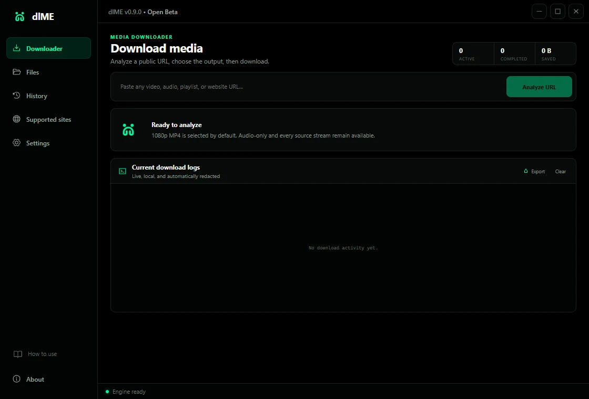
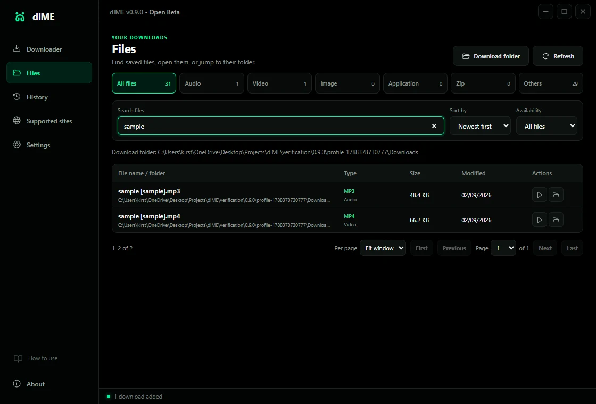
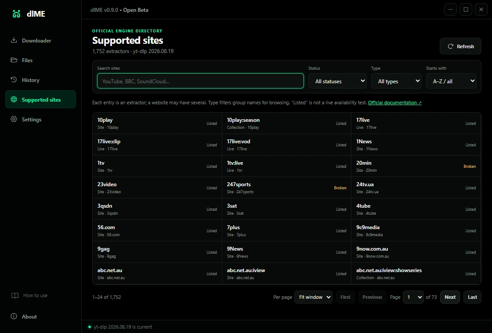

From link to
verified local file.
Download from media URLs, browser magnet links, and torrent files. Choose what to keep, follow real progress, stop the actual transfer, and verify the finished output.
Free and open source · Setup + portable · Current executables unsigned

Downloading selected files
- Mediavideo & best audio
- Torrentsmagnet & .torrent
- Livespeed, ETA & peers
- Localfiles & app data
From a magnet click to the files you chose.
Installed dlME can receive a magnet link from your browser or open an imported, dropped, or double-clicked .torrent file. Review the destination and file list before anything downloads.
- Games, applications, archives, documents, and media
- Real speed, ETA, peers, selected-file progress, and piece checks
- Pause, resume, cancel, and saved transfers across restarts
No ads. No promoted games. No embedded player. Transfers stop when the download completes; uploading can occur while downloading.

The downloader that stays honest about the whole job.
Most download tools focus on the button. dlME focuses on everything that decides whether the file is actually useful: the source, output, transfer, recovery, verification, and where the result lives afterward.
“Complete” means the file passed inspection.
dlME does not treat a finished process as proof of a good file. FFmpeg prepares the requested output, then FFprobe checks the final container and playable streams before completion is reported.
- MP4 is the practical video default
- Exact streams still honor the selected container
- Playable media is checked before success

INFOAnalyzing source and available streams
WARNChromium cookie database is unavailable
RETRYContinuing public media without browser access
READYFormat choices loaded
Recovery that protects the work already done.
Pause or stop while keeping supported partial data. Temporary failures retry automatically. If Chrome, Edge, or Brave locks its cookie database during public-media work, dlME retries once without browser access.
- Resume supported partial transfers
- Keep authenticated access optional and off by default
- Export sanitized diagnostics when a site blocks a job
Your library is based on what is actually on disk.
Clearing activity does not erase or hide downloads. dlME scans approved folders directly, then gives you the controls to find, open, and reveal the real files in Windows.
- Search, category, availability, sort, and pagination
- Audio, Video, Image, Application, Zip, and Others
- Open the file or reveal it in Explorer
One source. Four visible stages.
Media and torrent workflows keep decisions and recovery close to the job instead of hiding them behind one generic progress state.
- 01ADD
Open the source
Paste a media URL or magnet, or import a local torrent file.
- 02CHOOSE
Control the result
Select formats, playlist entries, torrent files, and the destination before transfer.
- 03FOLLOW
See the real job
Read percentage, bytes, speed, ETA, phase, retries, peers, and sanitized messages.
- 04KEEP
Verify and organize
Check media streams or torrent pieces, then browse the real files independently of history.
Real interface.
Natural proportions.
These are direct captures from dlME—not generated mockups. Each screen is shown uncropped so the product stays legible and honest.



See what the engine knows—without pretending every URL is guaranteed.
Search all 1,752 extractor entries reported by the bundled yt-dlp engine. Filter by name, type, initial letter, or status, and check for verified engine updates from inside dlME.
Transparent by default Websites, login rules, regions, rate limits, removed media, and anti-bot systems can change independently.
- Directory snapshot
- 1,752extractor entries reported
- Update source
- Officialstable yt-dlp channel
- Install gate
- SHA-256checksum + version smoke test
Previous verified engine retained for rollback
Proof belongs in the open.
Source snapshot 1.0.0 is tested before this site deploys. Published-release facts come separately from GitHub, so the page stays honest while the next app update is in progress.
- 1,752
- source-engine extractor entries
- 32 / 32
- source behavior tests passing
- 0
- source npm audit findings
- 2
- published Windows x64 builds
- 4
- source checksummed runtimes
- 6
- organized file categories
- SHA-256
- published release verification
- 10
- published release assets
1.0.0 Stable is available for Windows. The current Windows executables are unsigned, so Windows may show an unknown-publisher warning. Download only from the official GitHub release and verify SHA256SUMS.txt.
No dlME account.
No ads. No analytics. No telemetry.
Settings, history, logs, remembered folders, torrent metadata, partial state, and file records stay on your Windows computer. Network activity is limited to the download you request, its required sites or swarm, and official engine update endpoints.
Read the privacy documentDirect answers,
before the click.
Does every listed website always work?
No. The directory shows extractor code available in the installed engine. Websites, login rules, regional limits, removed media, rate limits, and anti-bot systems can change independently.
Does dlME bypass DRM or paywalls?
No. dlME does not bypass DRM, paywalls, access controls, or site challenges. Download only media you own or have permission to save.
Can dlME download any kind of torrent file?
Yes. dlME does not restrict payload categories: games, applications, archives, disk images, documents, and media are supported. It never automatically runs or opens downloaded applications. Version 1.0.0 supports BitTorrent v1 and hybrid metadata; pure v2 metadata is not yet supported.
Does torrent downloading upload data?
It can upload pieces to peers while your requested files are downloading. dlME stops the transfer at completion instead of continuing to seed.
Where does my data go?
Your settings, history, logs, and file records remain on your computer. Browser-session access is optional and off by default.
Why does Windows show a warning?
The Stable executables are currently unsigned. Verify the included SHA-256 sums and download only from the official GitHub release.
Setup or portable—what should I choose?
Use Setup for a normal Windows installation and shortcuts. Use Portable for a self-contained copy whose profile lives in dlME-data beside the executable.
Download clearly.
Keep locally.
Windows 10 & 11 · x64 · Stable 1.0.0